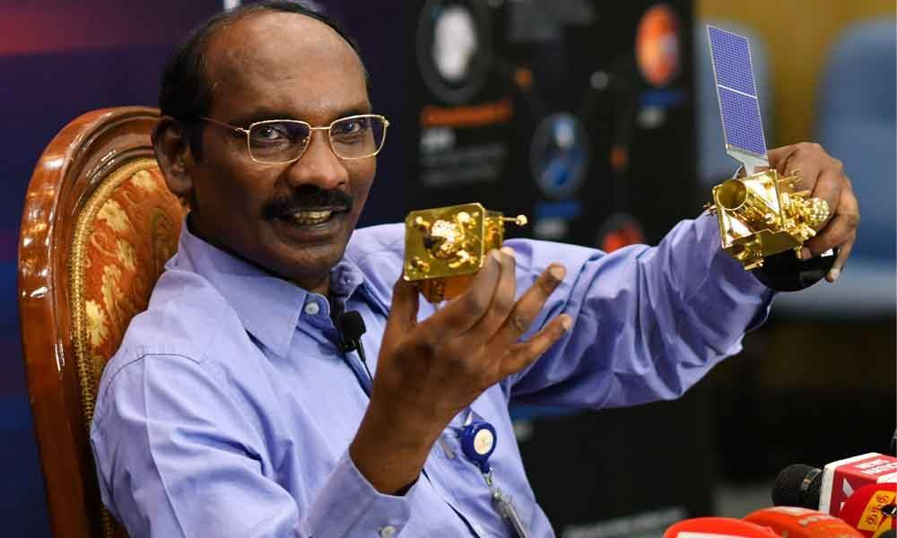

DR.SIVAN
Chairman of the Indian Space Research Organisation - ISRO

Dr. Sivan at the Press Conference
Kailasavadivoo Sivan (born 14 April 1957) is an Indian space scientist who is the current Secretary (Space) and ex-officio chairman of Indian Space Research Organisation and Space Commission. He has previously served as the Director of the Vikram Sarabhai Space Center and the Liquid Propulsion Systems Centre..
Carrier:
- Sivan worked on the design and development of launch vehicles for Indian Space Research Organization (ISRO).
- He was appointed as the director of ISRO's Liquid Propulsion Systems Centre on 2 July 2014.
- He was conferred Doctor of Science (Honoris Causa) from Sathyabama University, Chennai in April 2014. On 1 June 2015, he became the Director of Vikram Sarabhai Space Centre.
Achievements:
- Under his chairmanship, ISRO launched Chandrayaan 2, the second mission to the moon on July 22, 2019, Vikram rover crashed, but the orbiter is fine and orbiting the moon.
- Sivan joined ISRO in 1982 to participate on the Polar Satellite Launch Vehicle (PSLV) Project.
Project Chandrayaan-2:
- Chandrayaan-2 mission is a highly complex mission, which represents a significant technological leap compared to the previous missions of ISRO.
- It comprised an Orbiter, Lander and Rover to explore the unexplored South Pole of the Moon.
- On August 20, 2019, Chandrayaan-2 was successfully inserted into lunar orbit.
- His deep commitment to the Chandrayaan 2 mission was visible in the highly emotional hug that he and Prime Minister Narendra Modi shared on the doorstep of the Mission Control Centre on Saturday.
- PM Modi also gave an inspirational message to the scientists after the lander Vikram suffered a setback minutes before touchdown